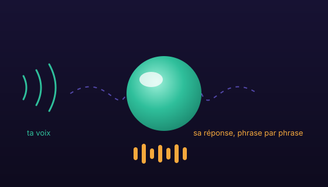

La voix avant tout
Tu parles, elle répond — à voix haute, avec les voix françaises de macOS. La lecture démarre phrase par phrase pendant que le modèle écrit encore : pas d'attente, pas de texte à lire. Parle par-dessus pour la couper (barge-in), maintiens la barre espace pour un échange rapide, ou lance la conversation naturelle : elle réécoute toute seule après chaque réponse.
boucle vocale
